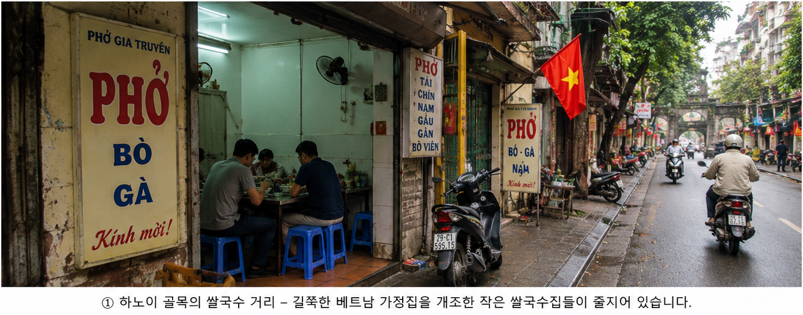
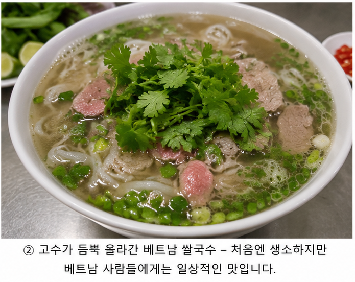
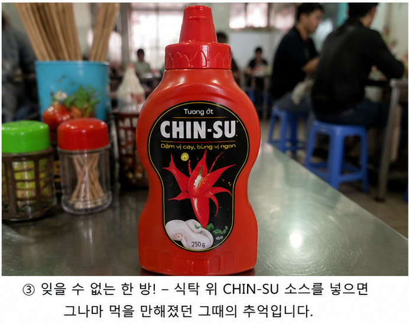

베트남 음식의 최대 난관? 한국인이 고수를 처음 먹어본 이야기
저는 베트남 국제결혼을 하기 훨씬 전, 여행사를 통해 하롱베이 여행을 간 적이 있습니다.
당시 하노이에 도착하자마자 가이드가 자신 있게 말했습니다.
"베트남에 오셨으면 쌀국수부터 드셔야죠!"

지금 생각하면 당연한 이야기였지만, 그때는 베트남에 대해 아는 것이 거의 없었습니다.
버스를 타고 이동해 도착한 곳은 길쭉한 베트남식 주택 사이에 있는 작은 쌀국수집.
그때만 해도 베트남 특유의 좁고 긴 집 구조도 신기하게 보였습니다.
그런데 식당 문을 열고 들어서는 순간...
어디선가 익숙하지 않은 향이 은은하게 풍겨왔습니다.
당시에는 몰랐지만, 그 향의 정체가 바로 "고수"였습니다.
이미 그때부터 뭔가 불안했습니다.
잠시 후 쌀국수 한 그릇이 나왔습니다.
탁한 국물에 넓적한 면.
고기는 보이는데 기름도 둥둥 떠다니고.
거기에 초록색 풀 같은 것이 듬뿍 올라가 있었습니다.

저는 첫 젓가락을 들고 생각했습니다.
"아... 이건 쉽지 않겠는데?"
한 입 먹어보니 역시 예상이 맞았습니다.
특히 고수는 충격적이었습니다.
미나리처럼 생겼는데 향은 전혀 다른 세계였습니다.
당황한 저는 식탁 위를 살피기 시작했습니다.
그러다 빨간색 양념통을 발견했습니다.
지금 생각해보면 아마 CHIN-SU 칠리소스였던 것 같습니다.

"일단 넣고 보자."
결과는 성공.
고수 향과 칠리소스가 만나면서 그나마 먹을 만한 맛이 되었습니다.
지금도 그때의 맛은 잊을 수가 없습니다.
그렇게 저의 첫 베트남 음식 체험은 시작되었습니다.
그 후 국제결혼을 하고 베트남을 자주 방문하면서 알게 된 사실이 있습니다.
고수는 쌀국수에만 들어가는 것이 아니었습니다.
계란요리에도 들어가고,
조개찜에도 들어가고,
닭요리에도 들어가고,
국에도 들어가고,
심지어 반찬에도 들어갑니다.
마치 한국에서 파와 마늘을 사용하는 것처럼 베트남에서는 고수가 자연스럽게 사용되는 경우가 많습니다.
그래서 베트남 여행이나 베트남 국제결혼을 준비하는 분들에게 드리고 싶은 말이 있습니다.
"고수가 맞으면 베트남 음식 천국."
"고수가 안 맞으면 적응 기간이 필요할 수 있습니다."
다행히 저도 지금은 어느 정도 익숙해졌습니다.
하지만 아직도 처음 하노이에서 먹었던 그 쌀국수와 고수의 충격은 잊지 못합니다.
여러분은 고수를 좋아하시나요? 아니면 저처럼 처음에는 적응이 어려우셨나요?